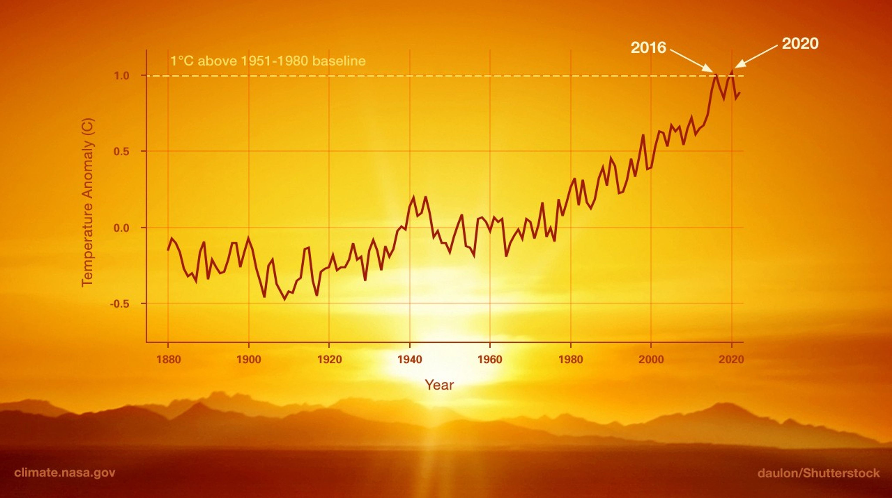
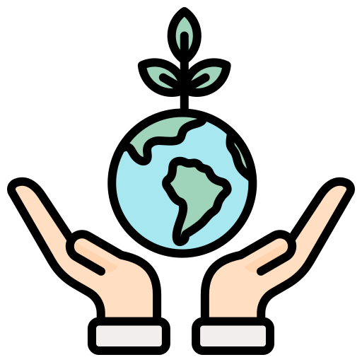

ჩვენ შესახებ
მწვანე ჰორიზონტი მუშაობს გარემოს დაცვის, გადარჩენის და განახლებისკენ.
კეთილი იყოს თქვენი მობრძანება „მწვანე ჰორიზონტზე“!
ჩვენი მიზანია ბუნების დაცვა და მდგრადი მომავლის შექმნა. აქ
გაიგებთ, როგორ შეგიძლიათ გაუფრთხილდეთ გარემოს, გაიზიარებთ
ეკოლოგიურ სიახლეებს და
მონაწილეობას მიიღებთ კამპანიებში, რომლებიც ბუნების სისუფთავის და
მდგრადობისთვისაა შექმნილი.
გაერთიანდით ჩვენთან და ერთად ვიმოქმედოთ მწვანე ჰორიზონტისათვის!
მწვანე გარემო
ჩვენ ვმუშაობთ ბუნების გაჯანსაღებაზე.
გადამუშავება
დავიცვათ რესურსები და გარემო ერთად.
მსოფლიო მასშტაბი
ჩვენი პროექტები გლობალურ მასშტაბს მოიცავს.